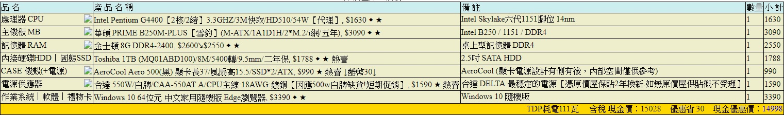
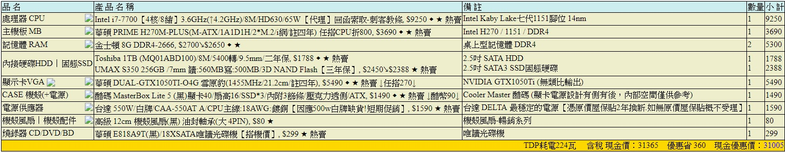
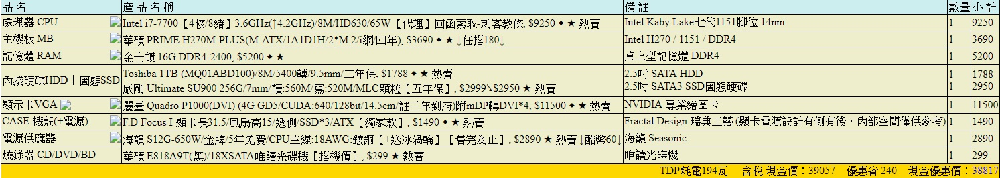

Choose your own computer
選購適合自己的電腦

大部分文書型的電腦屬於能上網，可以玩一些簡單遊戲就好
不過在玩比較複雜的3D遊戲時，就會遇到跑畫面不動或者是系統直接說不能玩的這個問題
大部分文書型的電腦屬於能上網，可以玩一些簡單遊戲就好
不過在玩比較複雜的3D遊戲時，就會遇到跑畫面不動或者是系統直接說不能玩的這個問題
，
文書機的定義屬於簡單，但處裡速度要快，
所以在建議上會推薦選擇中階的CPU(i3、i5)，
主機板以搭配CPU為主就可以，因為沒有遊戲這方面的問題，
所以顯示卡可以自由選購，其他像是硬體方面，
文書機須處裡龐大的資料，
在硬碟方面可以裝一顆1TB的傳統硬碟，
但追如果求速度的話，建議再加裝一顆SSD（固態硬碟），
記憶體方面可以買到8G，
燒錄機可以自由選購。
文書機是比較基本的電腦，配備不需多，
所以在價格上會偏向便宜，
但如果想做升級的話，加裝硬碟或顯示卡都是一項不錯的選擇，
但因為配備較低階的緣故，文書機在升級方面很有限。

遊戲機
這類型的電腦注重顯示卡，因為要跑得動遊戲畫面關係，
現在普遍都會組裝這種電腦，
因為它可以文書用也可以玩比較複雜的遊戲，
因為這類的電腦主要以跑遊戲為主，所以顯示卡是必備的，
通常都會選擇中階或高階的顯示卡，
在CPU的部分也會選擇中高階的，通常會是i5或i7的處理器，
而主機板也會選擇電競方面的，但這部分也可以做調整，
主要可以合CPU的腳位就可以，
在硬體方面，建議一顆1TB的傳統硬碟搭配一顆固態硬碟，
為了遊戲時的順暢，記憶體買到16G是比較保險，
而電源供應器建議600瓦以上的，因為有加裝顯卡，
如果瓦數不足導致電腦自動關機的話，對電腦是很傷的。
最後就是燒錄機跟風扇，燒錄機可有可無，但風扇一定要裝，
因為在高效能的運轉下，主機裡的溫度就會影響處裡的速度。
遊戲機主要以遊戲為主，所以顯示卡會選擇偏高的，
當然價格也會偏高，
顯示卡價格會落在6000到10000，
而像那種高階顯卡的價格，像是GTX1080，它的價格就會落在19000到24000，
CPU跟主機板加起來會落在13000到15000，
而記憶體在3000到5000，電源供應器落在1000到3000，
如果再加上風扇跟燒錄機的話，
整個主機的價格會落在24000到30000，
不過這只是個大概，可以再依自己的需求降低或升高自己的配備，
而遊戲機在升級方面有很大的空間，要怎麼去升級就看個人了

美工 圖像處裡
像是使用Adobe的Photoshop、Illustrator
或是Corel的CorelDRAW、Corel Painter都屬這類的電腦，
這類注重中央處理器CPU、記憶體RAM及快速的硬碟機，
因為資料量的龐大，所以硬碟能大就儘量買大一點，
所以如果可以的話，買一顆256GB的固態硬碟，
其他部分可以選擇中階的，這類機種較不需運用到顯示卡，
所以在購買上可以自由選擇。
機械製圖
這類電腦會選擇專業的繪圖卡，如果有畫到比較複雜的3D立體圖形的話，
就可以選擇買一萬元以上的繪圖卡。
但要注意，如果買的是專業的繪圖卡的話，
用它來玩3D的線上遊戲的話，就會跑的不是很順，
另外一方面就是它也滿注重處理器的，在選擇方面可以選擇偏高階一點的處理器，
小建議
在選擇自己的電腦時比較重要的就是預算跟自己的需求了，
一般人會想說買便宜一點的套裝機就好，
但套裝機裡面的配備真的有符合自己的需求嗎？
很多人因為貪小便宜而去買了不符合自己需求的電腦，
在出了問題後才後悔，覺得真的不行之後決定再買一台，
那這樣花費豈不是更大嗎，
所以在這裡推薦由自己來搭配電腦，搭配出來的是符合自己需求且獨一無二的，價
格說不定也會比套裝機更便宜。
在這裡要釐清一個現實，高階的配備貴，但它貴有它貴的道理，
不相信的話可以貨比三家，人家說一分錢一分貨，在這裡可是挺有說服力的。
還有一些該注意的地方
1. 當你花愈多錢買更高階的配備時，就代表你的電腦可以有一段很長的時間不會被淘汰
2. 保固期間也是考慮的重點之一，如光碟機保固都一年、硬碟、主機板、顯示卡、處理器、電源供應器最少要三年、記憶體都買終生保固的。
3. 機殼與電源供應器也是不可馬虎的重點之一。
4. 如果你不熟電腦，你最好可以找的到熟電腦的朋友來請教問題。
5. 相同價位的品牌電腦和DIY電腦，DIY電腦往往配備都比較好。
6. 在相同價位下的筆電跟桌電，桌電所有的效能會比電好。
回教學內容
電腦主機基本構造
如何組裝電腦